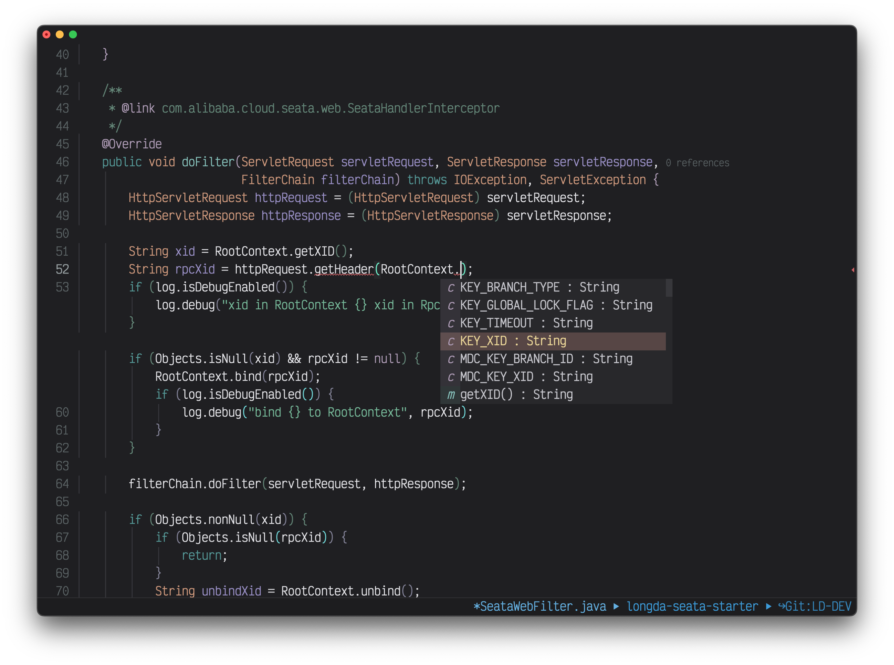

Self Introduction
Hi，欢迎来到 Vanniuner 的个人博客。我自多年前开始使用 Vim 进行编程，到如今转而使用 Emacs，经历了许多岁月。Emacs 是一款功能强大且高度可定制的文本编辑器，它提供了丰富的插件和扩展，使得编程和日常工作变得更加高效和愉悦。我准备记录一些在图形用户界面（GUI）和文本用户界面（TUI）工具下编程的技巧，包括使用 Emacs 的各种功能和快捷键，以及在日常工作中使用到的各种框架和技术。
在 GitHub 上，我经常为一些开源项目提出问题（issue），并将一些有趣的经历记录下来。作为一名实用主义者，我更注重分享软件的使用方法和解决问题的技巧，而不是深入探讨其背后的实现原理。此外，我还是一名 B 站的 UP 主，不定期分享一些关于摄影和剪辑的技巧，让你更好地掌握剪辑艺术的诀窍。
在 GitHub 上，我维护了一个开源项目——Neo-emacs。它是基于 Doom Emacs 的衍生版本，专注于为Java Web开发提供无与伦比的集成环境。Neo-emacs的设计理念体现了极简主义，它的编程界面将代码置于突出位置，同时弱化其他元素，旨在让我在编程时能够更加专注和集中注意力。这种设计思路的目标是为了创造一个真正专注于编程的环境。
我坚持在编程过程中尽可能多地使用shell，这样可以深入了解项目的细节。通过充分利用shell，我能够获得更多的项目信息，从而更好地掌握开发过程。
此外，Neo-emacs还集成了SQL、Redis和HTTP的客户端，使得在Emacs内部能够完成整个项目开发的各个环节。这个功能丰富的集成环境提供了便捷而高效的开发体验。
